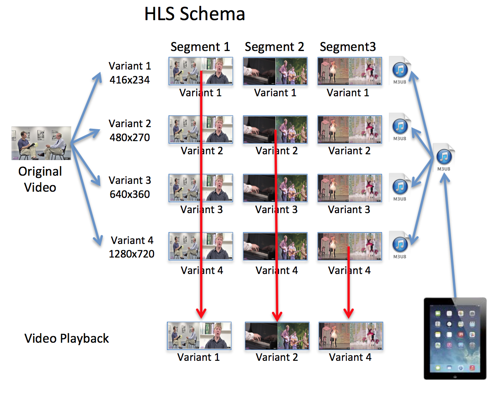
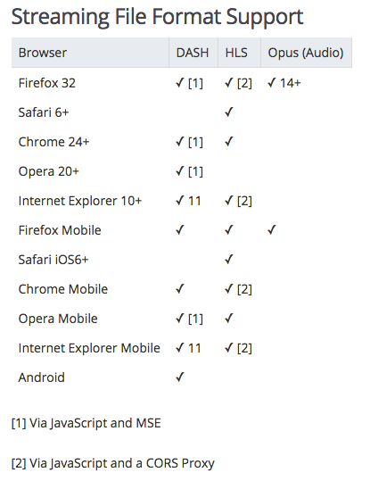
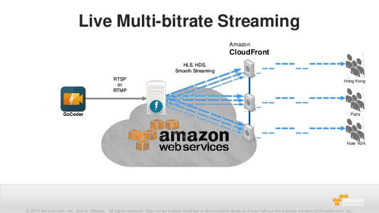

記錄一下如何讓Chrome的Desktop透過hls.js來support HLS格式的影音串流播放
今天工作上遇到一個問題是必須解決Chrome Desktop支援HLS的問題，並確保在flash被Chrome淘汰的情況下也不會受影響．這邊想起之前看過的一個套件hls.js可以做到這件事情，就稍微紀錄一下相關資料
HLS Introduction
HTTP Live Streaming（縮寫是HLS）是一個由蘋果公司提出的基於HTTP的流媒體網絡傳輸協議．
HLS Overview
HLS 的協定本身運作方式相當好懂，其實就是透過一個 .m3u8 副檔名作為串流的播放列表，然後裡面有多個 .ts 的檔案
你只要照著播放列表裡面給你的檔案順序播放就好了．

而如果我們真的將影片做上述的處理則會如下面的示意圖：

HLS Browser Compatibility
由於為Apple所推出的技術，所以HLS在macOS與iOS得safari上面全面支援．但Chrome與Firefox則沒有原生(native)支援:

但好在HLS的decode可以透過javascript來完成，所以就算browser本身不支援我們也可以透過js的套件來幫我們處理，這也是今天要介紹的主角hls.js來協助Chrome Desktop做到播放HLS串流的功能
hls.js Introduction
hls.js 是一個使用ECMAScript6所撰寫並透過Babel轉換為ES5語法的js套件，本身沒有任何外部js套件與flash player的依賴．完全透過js來做到HLS串流格式的解析與播放，並且相容於多個不同的瀏覽器與平台(桌機/手機)．而他運作則逼需仰賴HTML5 video 與 MediaSource Extensions(MSE)．
目前有相容的瀏覽器支援MSE(video/mp4)輸入的清單如下：
- Chrome for Android 34+
- Chrome for Desktop 34+
- Firefox for Android 41+
- Firefox for Desktop 42+
- IE11+ for Windows 8.1+
- Edge for Windows 10+
- Opera for Desktop
- Vivaldi for Desktop
- Safari for Mac 8+ (beta)
而HLS的支援則必須透過 CORS headers permitting GET 請求來傳遞.
hls.js Setup
我們可以透過npm快速幫我們安裝
npm install --save hls.js
接著我們到Chrome的setting裡面把Flash disable，確保HLS沒有透過任何的flash播放器來載入．
hls.js 的使用很簡單，在載入套件並產生一個新的Hls物件後，透過attachMedia功能附加回去DOM即可．
<script src="https://cdn.jsdelivr.net/hls.js/latest/hls.min.js"></script>
<video id="video"></video>
<script>
if(Hls.isSupported()) {
var video = document.getElementById('video');
var hls = new Hls();
hls.loadSource('http://www.streambox.fr/playlists/test_001/stream.m3u8');
hls.attachMedia(video);
hls.on(Hls.Events.MANIFEST_PARSED,function() {
video.play();
});
}
</script>
以上範例與Demo都直接來至於官網範例
[補充] Chrome/Firefox Integraion Extension/Addon
如果今天只是單純的使用者，我們則可以直接下載兩個Extension/addon讓我們的Chrome/Firefox正常播放HLS：
[補充] HLS, RTMP
HLS本身最方便的地方是它直接走在http/https上來實作，對於傳播在公開的網路來說是比較方便的
而RTMP則是必須透過Adobe的Flash來做解析，以目前的趨勢與結果來看這一塊會慢慢的從公開網路或是client中移除，但Server端的需求則還是會持續保留，主要原因則是因為他依舊保有Latency相對低且穩定的特性．
這邊可以舉一個自製串流播放的案例來看兩邊如何合作：

上圖由RTMP持續作為Server端轉換影片至streaming 處理主機的 source，這邊則可透過不同的轉換方式將影片轉成合適在公開網路播放的串流格式，如HLS．